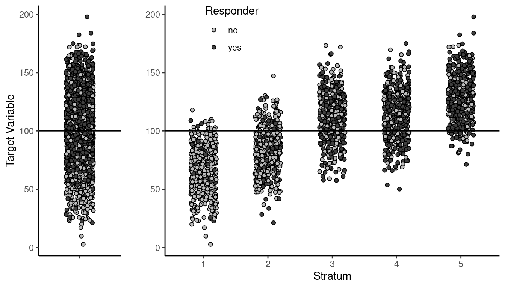
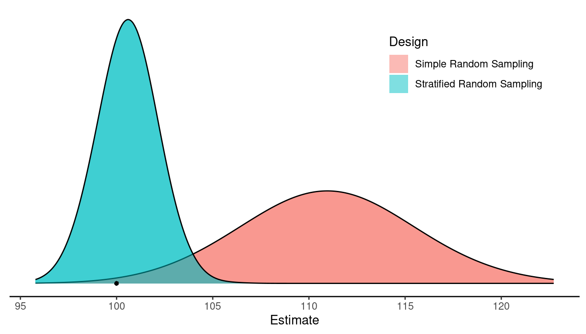
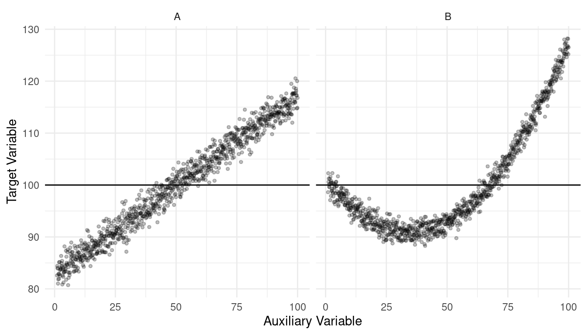
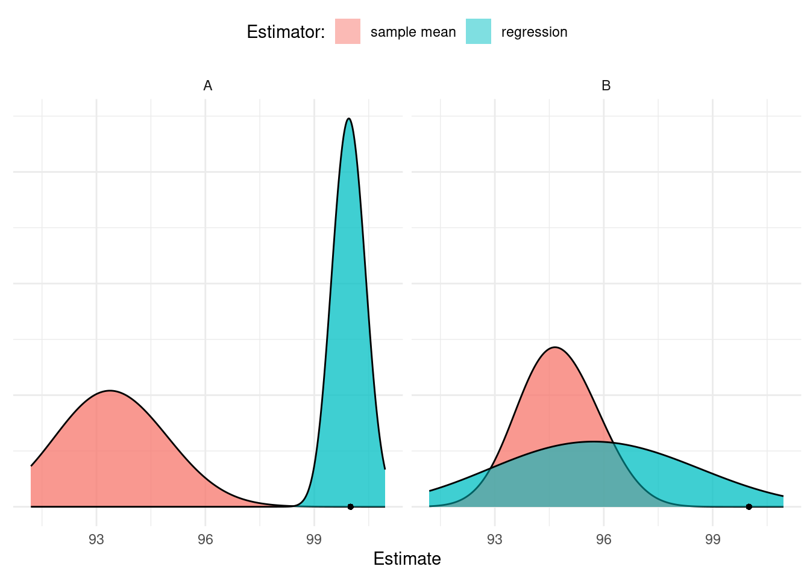

You can also download a PDF copy of this lecture.
Assume two strata: \(N_r\) responders, and \(N_m\) non-responders (m for missing). Thus \[ \mu = \frac{N_r}{N}\mu_r + \frac{N_m}{N}\mu_m, \] where \(\mu_r\) and \(\mu_m\) are the mean responses of all responders and all non-responders, respectively.
Assume a simple random sampling design. The sample is only from the stratum of responders. We compute \(\bar{y}_r\) (i.e., the mean response of the sample of responders) to estimate \(\mu\) (the mean response of all responders and non-responders). The bias of \(\bar{y}_r\) with respect to \(\mu\) is \[ E(\bar{y}_r) - \mu = \mu_r - \left(\frac{N_r}{N}\mu_r + \frac{N_m}{N}\mu_m\right) = \frac{N_r + N_m}{N}\mu_r - \frac{N_r}{N}\mu_r - \frac{N_m}{N}\mu_m = \frac{N_m}{N}(\mu_r - \mu_m), \] noting that \(N = N_r + N_m\). When is the bias large in absolute value?
The double sampling method is effectively a variation on the use of double sampling in stratified random sampling.
Obtain a simple random sample of \(n'\) respondents. Attempt to elicit responses from all \(n'\) respondents. This sample will include \(n'_r\) responders and \(n_m'\) non-responders (i.e., \(n' = n'_r + n'_m\)).
Obtain responses from a sample of \(n_m\) non-responders. This is a sample of the original \(n'_m\) non-responders. Note that we do not need to sample from the responders as we already have responses from them (i.e., \(n_r = n_r'\)). The estimator of \(\mu\) is then \[ \hat\mu = \frac{n_r'}{n'}\bar{y}_r + \frac{n_m'}{n'}\bar{y}_m, \] where \(\bar{y}_r\) and \(\bar{y}_m\) are the sample means for the samples of \(n_r\) responders and \(n_m\) non-responders, respectively.
Note: This assumes that the sample of \(n_m\) non-responders that ultimately respond are representative of the stratum of non-responders (i.e., \(\bar{y}_m\) is an unbiased estimator of \(\mu_m\)).
Example: In a simple random sample of 120 people, 30 people respond and the other 90 do not. Of the 30 people who responded, suppose that the mean response is \(\bar{y}_r\) = 5. Suppose that of the 90 non-responders, we are able to obtain responses from 25 respondents, yielding a mean response of \(\bar{y}_m\) = 2. Assuming that \(\bar{y}_m\) is an unbiased estimator of \(\mu_m\), what is our estimate of \(\mu\)?
Suppose we can also stratify respondents into strata such that for respondents in the same stratum there is little or no relationship between the target variable and responding.
Example: Suppose we have a population where responders tend to have larger values of the target variable, but we can stratify the population such that the relationship between responding and the target variable disappears within each stratum.

Now consider two designs to estimate \(\mu\): simple random sampling and stratified random sampling. We have that \(\mu\) = 100. How do these designs perform?
Calibration and its various special cases (e.g., ratio and regression estimators, post-stratification) can compensate for non-response provided that the assumed statistical relationship between the target variable and auxiliary variable(s) is accurate.
Example: The following plot shows two populations. In both populations \(\mu\) = 100 and the probability of non-response increases with the value of the auxiliary variable.

Assume a simple random sampling design and two estimators: the sample mean and a regression estimator. Recall that for both populations \(\mu\) = 100.
Recall that we can estimate \(\tau\) as \[ \hat\tau = \sum_{i \in \mathcal{S}}\frac{y_i}{\pi_i}, \] where \(\pi_i\) is the probability of inclusion of the \(i\)-th element in the sample \(\mathcal{S}\). To be included the element must be (a) sampled by the sampling process and (b) respond. Thus \[ \pi_i = P(\mbox{the $i$-th unit is sampled})P(\mbox{the $i$-th unit responds } | \mbox{ the $i$-th unit is sampled}). \] It is useful to write the inclusion probability as \[ \pi_i = \underbrace{P(\mbox{the $i$-th unit is sampled})}_{\pi_{i,S}}\underbrace{P(\mbox{the $i$-th unit responds } | \mbox{ the $i$-th unit is sampled})}_{\pi_{i,R}}, \] so that \(\pi_i = \pi_{i,S}\pi_{i,R}\). Here \(\pi_{i,R}\) is the probability that the \(i\)-th unit will respond (if sampled). Also recall that we can turn \(\hat\tau\) into an estimate of \(\mu\) by dividing \(\hat\tau\) by (an estimate of) the number of elements in the population.
If we know \(\pi_{i,R}\) we could effectively adjust for non-response. But in practice we need to estimate it. There are a variety of ways of doing this.
Weight-class adjustment. Suppose we can post-stratify the sample of sampled elements where we assume the response rate is approximately the same within strata. Then we can estimate \(\pi_{i,R}\) as the proportion of responders within each stratum.
Model-based adjustment. If we are willing to assume that \(\pi_{i,R}\) is a function of one or more auxiliary variables, we could estimate a model (e.g., logistic regression) that allows us to estimate the probability of a response from a respondent given the value(s) of their auxiliary variable(s).
Imputation involves predicting the response of non-responders. There are a couple of issues that should be considered when using imputation.
The method of imputing missing responses should not tend to overestimate or underestimate those responses, otherwise some (or more) bias will remain.
Uncertainty in the imputed responses should be taken into account in inferences (i.e., variances of estimators and thus bounds on the error of estimation). One powerful method of doing this is multiple imputation.
Imputation is also very useful for “filling-in” missing values of auxiliary variables (e.g., age, gender).
Where possible, incentivize respondents to respond.